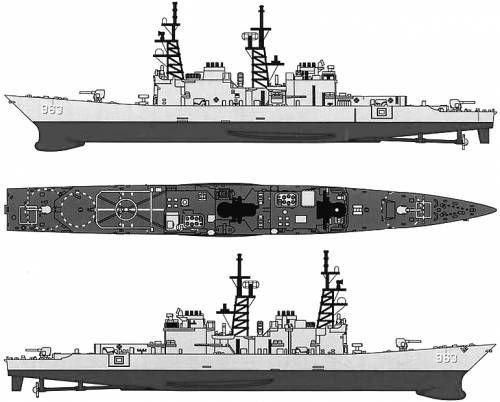
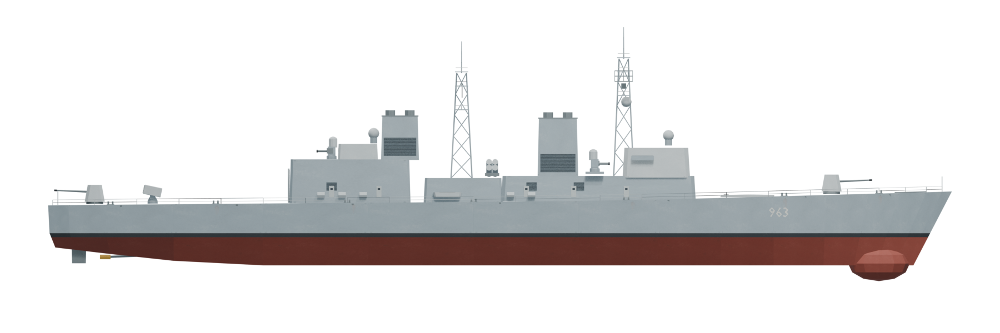

Spruance-Klasse · DD-963 · Überarbeitung 2
9.588 Dreiecke inklusive Bewaffnung · gebackene PBR-Verwitterung · bestehendes Zerstörer-Spielprofil. Achteres Geschütz und achtere Phalanx sind sichtbare, nicht zusätzlich aktive Waffen.
75 %
Ungefähre Ausrichtung nach Länge und Deckslinie. Keine pixelgenaue Vermessung; Blueprint und Fotos zeigen unterschiedliche Ausrüstungsstände. Die VLS-Anordnung folgt dem Luftbild.
Seitenansicht


Draufsicht
Vorher / nachher
Neu aufgebaute Brücke, Schornsteine, Gittermasten und Hangargalerien. Kamerahöhe leicht verändert; die Seitenansichten darunter nutzen dieselbe Projektion.
Überarbeitung


Material-Nahansicht

Ausgewaschenes Marinegrau, zwölf lokale Rostläufe und matte Oberflächenvariation. Farben, Rauheit und Mikrostruktur sind auch in den Runtime-GLBs enthalten.
Bereitgestellte Referenzen